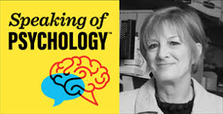
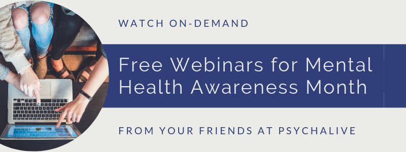

HERE ARE THE SERVICES WE PROVIDE FOR YOU.
HERE ARE THE TOP ONLINE PSYCHIATRY SERVICES

1. BEST APP-BASED SERVICE: Everything can be done at home from your fingertips - from the easy sign-up process to communicating via live video chat.TALKSPACE
2. BEST FOR FLEXIBLE SCHEDULING: HR Analytics, Giving Effective Feedback, Employee Engagement, Succession Planning, Having Influence and Impact, Leadership, a MDLIVE
3. BEST FOR COLLABORATIVE CARE: Amwell isn’t just an online therapy and psychiatry service, they cover other types of medicine with board certified doctors available for direct-to-patient communication.AMWELL
4. BEST TO CHOOSE YOUR PSYCHIATRIST: If you want to bypass the process of being matched with a psychiatrist and choose your own instead, consider Doctor On Demand.DOCTOR ON DEMAND
5. BEST OFFORTABLE OPTIONS: Psychiatric visits are typically more expensive than therapy sessions since psychiatrists undergo specialized education that allows them to prescribe medications.RE THINK MY HEALTH CARE
6. BEST FOR MEDICATION DELIEVERY: Well-known telehealth platform BetterHelp partnered with Brightside to deliver prescription medications to patients who need them. BRIGHT SIDE
MENTAL HEALTH RESOURCE INSTITUTES
1. AMERICAN ACADEMY OF CHILD AND ADOLESCENT PSYCHIATRY: This resource center includes videos, ways to get help, and advocacy campaigns.AACAP
2. SUBSTANCE ABUSE AND MENTAL HEALTH SERVICES AND ADMINISTRATION: SAMHSA provides information on mental health services and treatment centers through a service locator. SAMHSA
3. NATIONAL ALLIANCE ON MENTAL HEALTH: Find resources for youth, including information on managing your mental health in college and making friends. NAMI
4. NATIONAL INSTITUTE OF MENTAL HEALTH: This website provides easy-to read guides and brochures to help better understand a variety of mental health disorders.NIMH
FEEL FREE TO ASK : HELPLINES
1. CAMPAIGN AGAINST LIVING MISERABLY: We’re supporting more people than ever through this challenging time and currently taking more calls and webchats than usual. click to go
2. LOVE IS RESPECT: We’re offering comprehensive resources to engage, educate, and empower young people to prevent and end abusive relationships. click to go
3. LIST OF INTERNATIONAL SUICIDE HOTLINES: There is help for you. Stay on the phone with the operator and wait for help to arrive. Do not hesitate to call. Your life is extremely valuable, and people care about you.
Please reach out for help. Never act on your thoughts of suicide. Never.click to go
4. NATIONAL EATING DISORDER ASSOCIATION: NEDA supports individuals and families affected by eating disorders, and serves as a catalyst for prevention, cures and access to quality care.click to go
CHOOSE YOUR PERFECT WEBINARS

1. A NEW LENS FOR MONITORING: The perfect video platform to keep your company organized, connected, and engaged from anywhere.click to go
2. MENTAL HEALTH AMERICA: Mental Health America (MHA)'s work is driven by its commitment to promote mental health as a critical part of overall wellness, including prevention services for all; early identification and
intervention for those at risk; integrated care, services, and supports for those who need them; with recovery as the goal.click to go
3. PSYCHALIVE: In honor of Mental Health Awareness Month, we are offering free access to the following Webinars. We hope you enjoy the Webinars and are wishing you all the best in your mental health journey!click to go
4. HUB AT WORK: Join the mySupport onsite clinical team for five sessions designed to raise awareness and promote good mental health for allclick to go